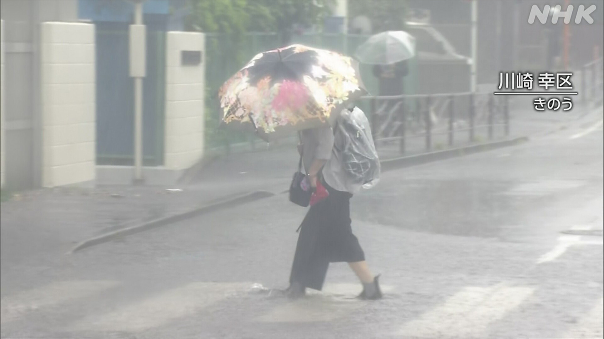
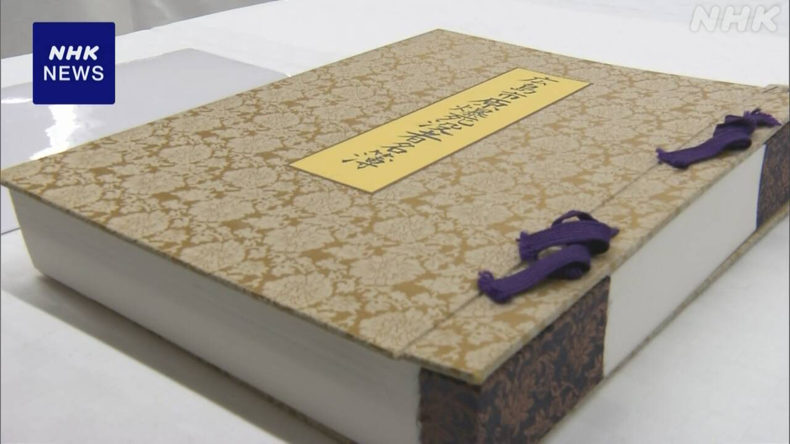

最新ニュース
1️⃣ 九州北部と中国地方と近畿地方 梅雨が始まった
気象庁は4日、九州北部と中国地方、近畿地方で梅雨が始まったようだと言いました。
九州北部は、いつもの年と同じぐらいの日に、梅雨が始まりました。中国地方と近畿地方は、いつもの年より2日ぐらい早いです。
九州では5日まで、たくさん雨が降る所があるかもしれません。
台風6号で雨がたくさん降った所では、山などが崩れやすくなっているため、気象庁は気をつけるように言っています。
2️⃣ 災害のときの新しい情報「どう伝わったか調べる必要がある」

台風6号が来て、3日まで、いろいろな所で風が強くなって、たくさんの雨が降りました。
災害の危険を知らせる新しい情報「新防災気象情報」が、たくさん出ました。4つの災害について出す情報で、先月から始まりました。
3日は、たくさんの雨が降る「大雨のレベル4危険警報」や山が崩れそうなときに出す「土砂災害のレベル4危険警報」、そして、川の水があふれそうなときに出す「氾濫のレベル4危険警報」が、続けて出る所もありました。
専門家は「どんな危険を知らせているかが分かりやすかったです。しかし、情報がとても多くなってしまいました。情報が、その場所の人たちにどのように伝わって、避難するための行動に役立ったのか、国などが調べる必要があります」と話しています。
3️⃣ 広島 この1年に亡くなった原爆被害にあった人の名前を名簿に書く

戦争で原爆が落とされた広島市で、毎年8月6日に平和を祈る式があります。
このときに、原爆で亡くなった人の名前を書いた名簿を、石碑の中に入れます。
広島市は、この1年に亡くなった3000人ぐらいの名前を新しく名簿に書く予定です。4日から、名簿に名前を書くことを始めました。
今までは、原爆の被害にあった人が、ずっと行ってきました。しかし、高齢になったため、今年は、戦争の後に生まれた人たちが手伝うことになりました。
名簿に名前を書くのは、8月5日まで続きます。
4️⃣ 北九州市 回転ずしの店ですしを作る人の大会
「回転ずし」の店で、すしを作る人たちの大会が北九州市でありました。
14人が出ました。6分で、1人前のすしや、のりで巻いたすしを作りました。
大会では、作る速さや、美しいかどうかなどをチェックしました。
そして、日本の店で働く外国の人たちの競争もありました。
北九州市の店で働いているインドネシアの人は、「1か月前から毎日練習しました。とても緊張しました」と話していました。
- 〜ようだ / 〜みたいだ
- 〜くらい / 〜ぐらい
- 〜より
- 〜まで
- 〜ところ
- 〜かもしれない / 〜かもしれません
- 〜がある / 〜がいる
- 〜ように
- 〜やすい
- 〜ている / 〜でいる
- 〜ため
- 〜など
- 使役 (〜させる / 〜せる)
- 〜について
- 〜から
- 〜ても / 〜でも
- 〜し、〜し
- 〜てしまう
- 〜中
- 〜予定だ
- 〜予定
- 〜こと
- 〜ず / 〜ずに
- 〜ことになる
- 〜になる
- 〜後 / 〜あと
vebaev.github.io
Generated: 2026-06-04 11:55:46 UTC